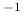

Pigment concentration for cox54a,cox54b ocean BRDF (in mg/m).
cox_and_munk_pcl value
At present only available with rte_solver cdisort, mystic_doc\ifthenelse\booleanrte_solver montecarlo and rte_solver fdisort2. The number of streams (nstr) is automatically increased to 16 if cox_and_munk BRDF is switched on, to avoid numerical problems. The default value is 0.01 mg/m. To switch on Cox and Munk BRDF, specify any of the cox_and_munk options and define at least cox_and_munk_u10.